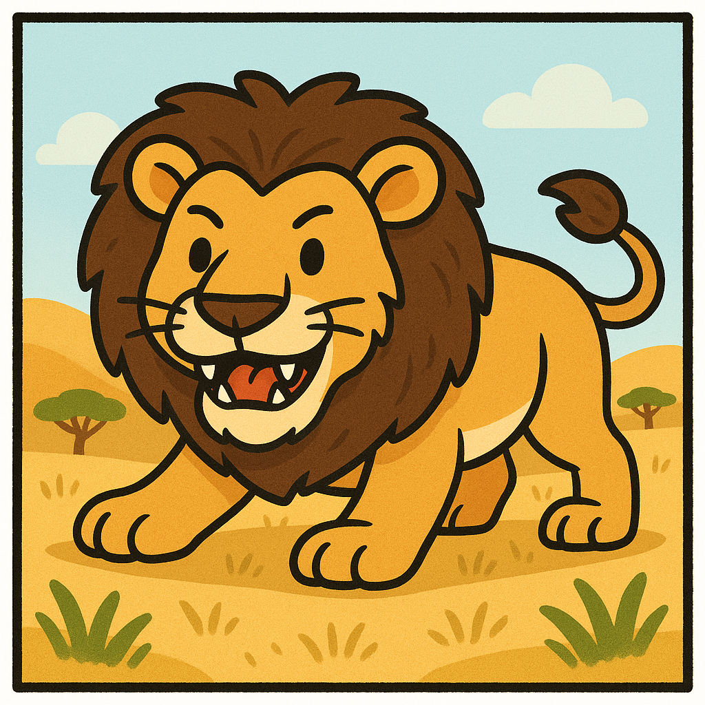
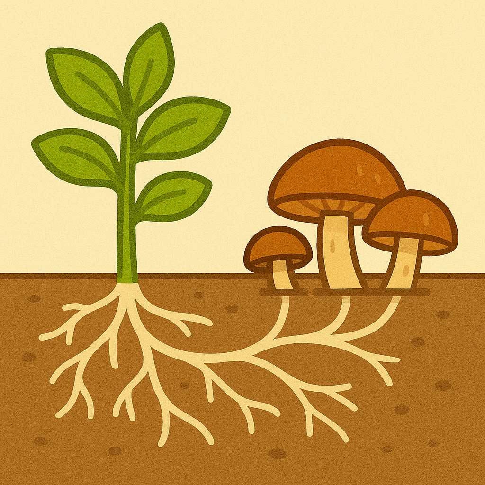

🍽️ Estructuras alimentarias
🄠Ejemplo 1: Vacas (herbÃvoros): No tienen dientes en la parte superior delantera. Mastican el pasto con las muelas y lo “rumian†para digerirlo mejor.
🦠Ejemplo 2: CarnÃvoros: Tienen colmillos y garras para cazar y desgarrar carne.

🦠Ejemplo 3: Aves insectÃvoras: Tienen picos finos y largos para atrapar insectos entre las hojas.
🌱 Ejemplo 4: Plantas con micorrizas: Forman asociaciones con hongos que les ayudan a absorber mejor el agua y nutrientes del suelo.
